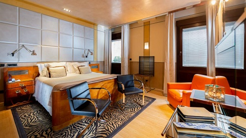

The rooms in Ca' Pisani hotel have been realised completely using original pieces of design and are taken care of down to the last detail.
Refined style, play of colours and precious materials make the hotel a real jewel of contemporary design. The presence of marbles, precious fabrics and inlaid wood furniture has been designed to guarantee guests maximum comfort and relaxation.
Elegant and refined, some rooms overlook the side of the Gallerie dell'Accademia, or have a partial view of Giudecca Canal.
All rooms are treated with taste and refinement: the Deco furnishings typical of the 1930s and 1940s, fine Bevilacqua fabrics (created to designs of delicate beauty) and doors with geometric patterns each different from the other (and executed with extraordinary cabinet-making work) are just some examples that make Ca 'Pisani a unique place of its kind.
The marble finishes, the high ceilings of the rooms on the first floor, the original beds of the 1930s and 1940s (embellished with silver headboards), the bamboo floors, the exposed beams of the rooms on the top floor, the stairs in wood and glass and the door handles designed ad hoc are all meticulously studied elements, they are the result of a precious work of craftsmanship.
Some rooms can accommodate three people and we have both cradles and cots for small children. In addition, two rooms are available for guests with disabilities, both on the first floor.
All rooms are equipped with free Wi-Fi, telephone, flat-screen TV, air conditioning, heating with electric blinds and double-glazed windows.
The bathrooms are embellished with starlight marble decorations, bathtub/shower, hair dryer, heated towel rail and exclusive complimentary toiletries.